is on the rise / is climbing / has been going up / has risen steadily
下降
is falling / has dropped / is in decline
变多 / 变少
more and more people / fewer and fewer people
相比过去
compared with twenty years ago / it wasn't like this when…
第 10 题是两道题合成一道。Why is the number of females who smoke increasing? How about young people?
只答前半就漏了。遇到 How about…? 必须回答第二个问题，可以用 As for young people… 或 The same applies to… 接上。
03课本例题：八个原因，最后一个才是主因
例题问 Why do you think people marry?。这段是全书里「多原因分析」示范得最完整的一段：先给两个最普遍的人性原因，再列四种具体情况，最后用 But the majority of people… 给出主因。这个「罗列 + 归结」的结构，就是本课的高分模板。
Example
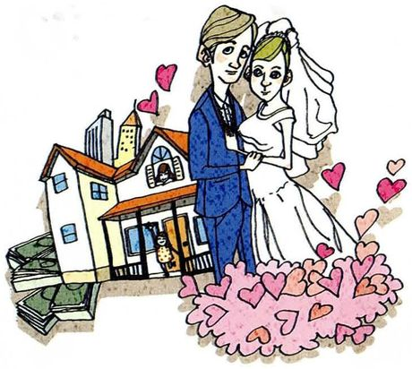
Why do you think people marry?
What you seeA bride in white and a groom in a blue suit, with a suburban house and a city skyline behind them, stacks of what look like documents at the left, and pink hearts scattered everywhere.
What it means为什么人们结婚。注意是 people，不是 you —— 要分析群体，不是讲自己的打算。
Say it like this"People naturally dislike being alone, and there's also plain curiosity about the opposite sex. Arranged marriages between families are still common in some places. But these days people marry for all sorts of reasons — some because everyone around them is marrying, others to save money by living together. Some marry for money, which everyone disapproves of and nobody stops. Plenty marry because they want children. But the majority, I think, marry because they're in love and want to stay together."
这段的三个可迁移技巧：
① 开头先给人性层面的原因（People naturally dislike being alone），格局立刻不同；
② 中间用 some…, others… 把多种情况串起来，不显得零散；
③ 结尾用 But the majority… 收束到主因 —— 这是整段最值钱的一句。
「我认为」不要每句都说。
课本这段只有开头和结尾各出现一次 I think，中间全是陈述。中国学生常在每句前加 I think，听起来既啰嗦又没底气。用 probably / it seems / in most cases 代替，既保留不确定感又不重复。
04二十个问题：怎么答出层次
每张卡三段：What you see 照着图描述，What it means 说清这题在问谁的原因，Say it like this 给三档答案：① 一句短答 / ② 两个原因 / ③ 再加一个限定或具体例子。第三档请尽量换成你自己的观察。
01
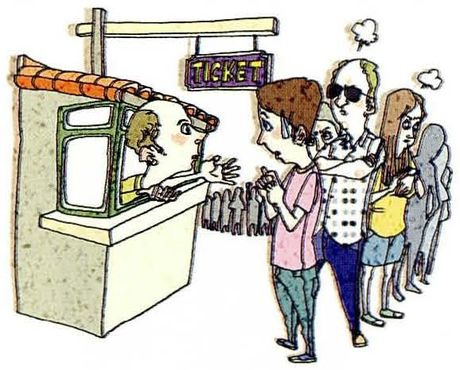
Why are you learning English?
What you seeA queue of people at a small food stall, someone leaning over the counter to order. A crowd waiting to get something they want.
What it means这题问你自己（Why are you…），可以讲个人经历。注意现在进行时：强调「眼下在做的事」。
Say it like this①For research, mainly. ②Two reasons: most of the papers in my field are in English, and I'd like to present at a conference without reading from a script. ③I started for the exam, like everyone, and it didn't work — I passed and still couldn't speak. What changed was realising that reading English and speaking it are almost unrelated skills. So now the reason is different: I want to be able to sit at a table with people from five countries and not be the quiet one. That's a much better motivator than a certificate.
02
Why do you think people in general are getting fatter?
What you seeA heavy man slumped at a computer, surrounded by burger boxes, cups and wrappers on the floor. Sitting and eating, all day.
What it means为什么人们普遍变胖。in general 明确指群体，个人经历只能当例子。
Say it like this①Cheap food and less movement, I'd say. ②Partly the food — processed things are cheap and everywhere. Partly the sitting: most jobs now involve a chair and a screen. ③I'd put it down to cost more than willpower. Good food takes time and money, and both are scarce for most people. But there's something else too: we've built places where walking isn't an option. My grandmother walked to the market every day because there was no other way. I'd have to walk forty minutes to find a shop, so I don't. The environment changed, not the people.
03
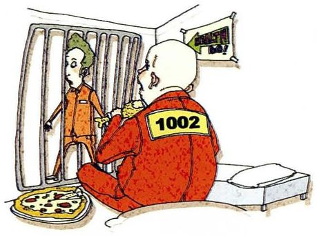
Why do so many people want to be slim?
What you seeA man in an orange uniform numbered 1002 sitting on a bed looking at a much thinner man behind bars. Even in prison, someone is thinner.
What it means为什么这么多人想瘦。注意 so many —— 暗示这个现象很普遍，回答时要解释「为什么普遍」。
Say it like this①Mostly appearance, I think. ②Two things: how we look, and how we're judged for it. Being slim has become shorthand for being disciplined, which is unfair but hard to escape. ③I'd separate health from attractiveness, because the health argument is often just a respectable cover. Nobody needs to be that thin to be healthy. What people actually want is to be looked at differently, and thinness is the cheapest version of that available. Though I'd add that in my parents' generation it was the opposite — being slightly heavy meant you weren't poor. So the target moves, which suggests it's social rather than medical.
04
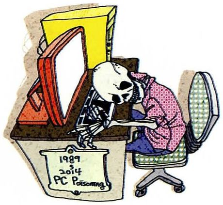
Why do you think people are hooked on computers?
What you seeA man hunched forward at a computer in a cubicle, staring at the screen, with a sign reading internet PC room. He's not leaving soon.
What it means为什么人们沉迷电脑。课本脚注：hooked on = 对某物上瘾、着迷。
Say it like this①Because everything's there — work, friends, entertainment. ②Two reasons: it's genuinely useful, and it's designed to be hard to leave. The second part is what makes "hooked" the right word rather than just "interested". ③I'd distinguish between computers and phones, because the addiction argument mostly belongs to phones now. But the mechanism is the same: variable reward. You check something and sometimes there's something good. That's the same structure as a slot machine, and it's not an accident — it's engineered. The uncomfortable part is that I know all this and still check my phone forty times a day.
05
Why do you think people watch TV instead of reading a book?
What you seeA small television set on a table, with books and folders piled up beside it, untouched. The screen is winning.
What it means为什么人们看电视而不是读书。这是对比题，答案必须解释两者的差别，不能只夸电视。
Say it like this①Because it's easier — you don't have to do anything. ②Reading is active and watching is passive. After a long day most people don't have the energy to be active, so the screen wins by default. ③I'd say the difference is that reading requires you to build the picture yourself, and that's precisely what makes it better and harder. But I don't think people are lazy — I think they're tired. I read twenty pages on a Sunday morning and none on a Wednesday night, and the book hasn't changed. So the question isn't why people watch TV, it's what state they're in when they do.
06
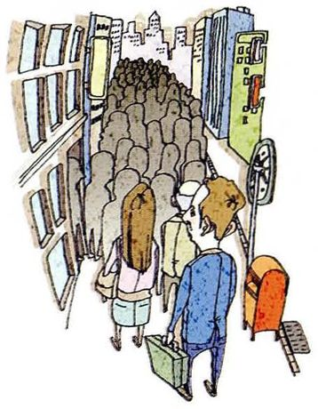
Why do you think some people choose to live in a crowded city?
What you seeA packed street, shoulder to shoulder, tall buildings on both sides. Nobody has any space.
What it means为什么有人选择住拥挤的城市。注意 choose to —— 问的是主动选择，不是被迫。
Say it like this①Work, mostly — that's where the jobs are. ②Jobs, but not only that. Cities also give you the option of being left alone, which small towns don't. ③I'd say people don't choose crowds, they choose what the crowd makes possible — work, hospitals, a choice of schools, and the feeling that if you disappeared for a week nobody would notice. That last one sounds bleak but it's genuinely why some people prefer cities. In a town of two thousand, everybody knows your business. Here I've lived in my building for two years and know one neighbour.
07
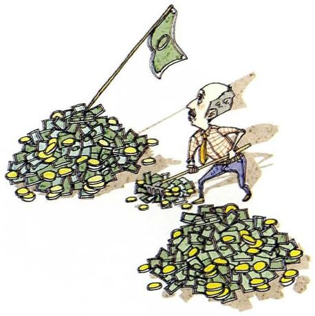
Why do you think people want to make more money?
What you seeA small man standing between two enormous heaps of coins, planting a flag on one of them like he's claimed territory. More is clearly not enough.
What it means为什么人们想挣更多钱。make money 是「挣钱」，不是「造钱」。
Say it like this①Security, mostly — not the money itself. ②Two different things get confused here: wanting enough, and wanting more. Enough is about safety. More is usually about comparison. ③Up to a point it's straightforward — rent, parents, a bad month. Past that point it stops being about money and becomes about status, which is why it never satisfies. The strangest part is that people know this and keep going. I'd add that in my field the money motive is mostly absent and the status motive is alive and well; it just wears the disguise of caring about the work.
08
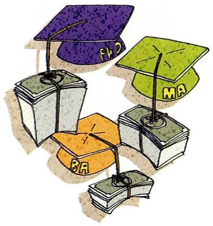
Why do you think people need a college degree?
What you seeThree graduation caps in different colours, labelled BA, MA and PhD, sitting on boxes made to look like books.
What it means为什么人们需要大学文凭。注意 need —— 问的是必要性，可以顺势质疑这个必要性。
Say it like this①As a filter, more than as training. ②Most jobs don't use what you learned. The degree mostly proves you can finish something difficult, which is why employers ask for it. ③I'd question the word "need". For some careers it's genuinely required — you can't be a doctor without one. For a lot of others it functions as a sorting mechanism, and that has a cost: it excludes people who are capable but couldn't afford four years. I'd say the honest answer is that people need the degree because everyone else has one, which is a competition, not a qualification.
09
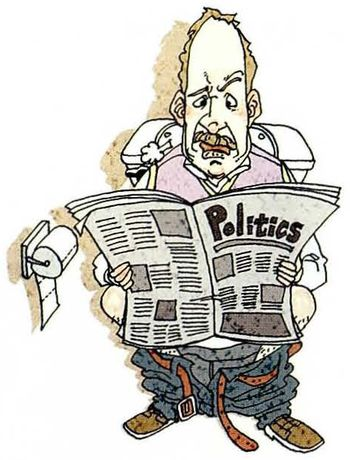
Why do you think people generally distrust government?
What you seeA bald man with a moustache, red in the face, gripping a newspaper with Politics printed on the front. He's had enough.
What it means为什么人们普遍不信任政府。这题容易变成抱怨，要分析，不要发泄。
Say it like this①Partly experience, partly how news works. ②Two reasons. One, promises that don't get kept — that's earned. Two, bad news travels and good news doesn't, so the impression is worse than the record. ③I'd separate distrust of institutions from distrust of people in them, because the second is much higher. Most people I know assume the local official is trying their best and the system above them is not. And I'd add that this isn't unique to one country — the numbers are falling almost everywhere, which suggests the cause is something structural, like how information moves now, rather than one government's behaviour.
10
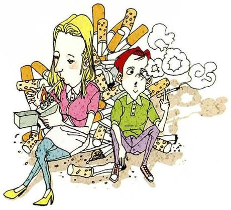
Why do you think the number of females who smoke is increasing? How about the number of young people?
What you seeTwo young people sitting close together, both smoking, with smoke curling up around their faces. Neither looks like they're enjoying it.
What it means两道题合成一道：女性吸烟人数为什么在增加？年轻人呢？漏答后半就少了一半分。
Say it like this①Advertising and social pressure, probably — and the same for young people. ②For women, I'd say it's partly that smoking stopped being seen as unfeminine, which is progress being used in a bad direction. As for young people, I think it's the same mechanism — it reads as adult and rebellious. ③On the first part: cigarettes were marketed to women as a symbol of independence, and that worked. The health warnings arrived later and never quite caught up. On the second: I'd say young people smoke for the reason they always have, which is that it's the cheapest way to look like you don't care what adults think. What's changed is the price and the packaging. So the two trends look similar but the causes aren't quite the same — one is advertising, the other is adolescence.
11
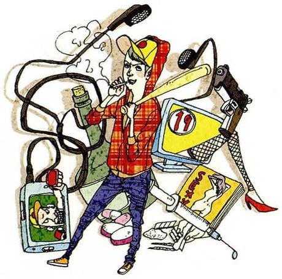
Why do you think juvenile delinquency is on the rise?
What you seeA young man in a red plaid shirt and yellow cap, arms out, surrounded by tangled wires, tapes, a telephone and shopping bags. A mess he's in the middle of.
What it means为什么青少年犯罪在上升。课本脚注：juvenile delinquency = 青少年的反社会或犯罪行为；on the rise = 在增加。
Say it like this①I'd question the premise first — is it actually rising? ②In many places it's been falling for twenty years, so I'd want to know what data this is based on. If it is rising somewhere, I'd look at family and school before blaming phones. ③I'd push back on the question, politely. Crime statistics for young people have generally gone down in most developed countries since the nineties, so "on the rise" may be an impression rather than a trend. And impressions matter — if people feel less safe, that's real even when the numbers fall. But I'd rather answer the real question, which is what makes a teenager commit a crime, and almost always it's the same three things: no adult paying attention, no money, and nowhere to be.
12
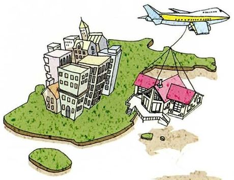
Why do you think people emigrate?
What you seeA small green island with a building and a pink house on it, and an aeroplane flying away overhead. Leaving on purpose.
What it means为什么人们移民。课本脚注：emigrate = 离开自己的国家去别国生活。注意 emigrate（移出）和 immigrate（移入）方向相反。
Say it like this①Money, family, or safety — usually one of those three. ②Two reasons dominate: work and family. Most people who emigrate are not fleeing anything, they're following a job or a person. ③I'd sort it into two groups, because they're often discussed as one. There's emigration because you want something — a better salary, a degree, a marriage. And there's emigration because staying is worse — war, persecution, no work at all. The first group is choosing between options and the second isn't, and I think it's a mistake to put them in the same sentence. The people I know who've gone abroad all belong to the first group, and they'd say so themselves.
13
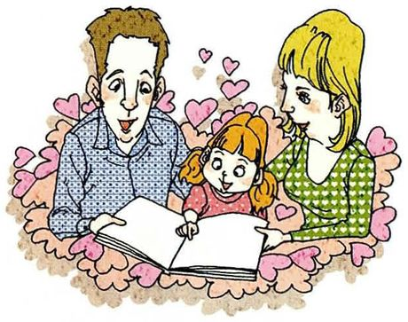
Why do you think people want children?
What you seeA mother and father leaning in on either side of a small girl with a book open on her lap, all three smiling. Hearts floating around them.
What it means为什么人们想要孩子。第 14 题是它的反面，两题可以对照着答，显得思路完整。
Say it like this①I'd say it's rarely a rational decision. ②Two kinds of reasons: the ones people say out loud, like family pressure and old age, and the ones they don't, which is simply wanting one. ③My mother's answer was that she wanted someone to be old with, which I found both touching and slightly unfair. But I think the honest answer is that most people don't decide at all — they arrive at thirty-five and it feels like the next thing. The people who do decide consciously are usually choosing against it, which is a much harder position to hold in this culture.
14
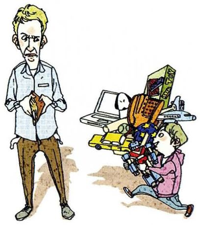
Why do you think some people want to be childless?
What you seeA man standing holding a baby's rattle, looking over at a family loaded with shopping bags, laptops and luggage. Two versions of a life.
What it means为什么有人不想生孩子。注意 be childless 是状态描述，不是贬义。答这题要小心，别说教。
Say it like this①Mostly time and money, I think. ②Two honest reasons: it's expensive, and some people simply don't want the job. Neither of those needs justifying. ③I'd reframe it slightly, because "childless" makes it sound like a lack. If someone tells me they don't want children, I take it at face value — just as I would if they said they didn't want to live in the countryside. What I'd add is that the pressure goes both ways now: the people who choose children get asked why, and so do the people who don't. In my generation I think the second question is asked less often than people assume.
15
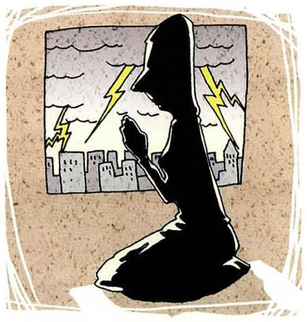
Why do you think most people have some religion?
What you seeA figure in dark silhouette kneeling with hands together, in front of a window where lightning strikes over a city. Praying in a storm.
What it means为什么大多数人都有某种宗教。这题涉及信仰，描述别人为什么信，不要评判信仰本身。
Say it like this①Comfort, I think — and community. ②Two things: it answers questions we can't answer, and it puts you in a room with people who'll help when things go wrong. ③I'd put explanation second and belonging first. Most people I know who are religious didn't arrive there through argument — they were raised in it, and it comes with a community that shows up when somebody dies. The intellectual part is real but it's not usually why people stay. Which also explains why it's hard to argue someone out of it: you'd be taking away more than a belief.
16
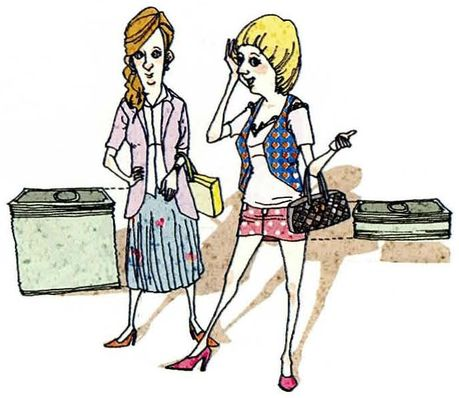
Why do clothing fashions change so quickly?
What you seeTwo women standing together, one in a pale skirt and jacket, one in a short skirt and patterned top, both looking at each other's outfit. Two versions of now.
What it means为什么服装潮流变得这么快。注意 fashion 是「时尚/潮流」，fashionable 是「时髦的」。
Say it like this①Because somebody profits from it changing. ②The honest reason is commercial: if clothes lasted, nobody would buy new ones. But that only works because we agree to care. ③There's a mechanical explanation and a social one. Mechanically, an industry needs turnover, so it schedules obsolescence. Socially, fashion only works if it's slightly uncomfortable to be out of date — that's the whole engine. What I find interesting is that the cycle has sped up: it used to be seasonal, and now it's weekly, which is faster than anyone can genuinely change their taste. So most of what people are chasing isn't taste at all, it's the fear of looking like last month.
17
Why do people do things which they know are bad for them?
What you seeA crowded jumble of figures shouting and waving papers, a big clock and a graph with a falling line. Everyone stressed, nobody stopping.
What it means为什么人们明知有害还去做。这题是人性题，答得好会很出彩，也是唯一可以完全不谈社会的题。
Say it like this①Because knowing isn't the same as feeling. ②Two reasons. The reward is now and the cost is later, and our brains are bad at later. And the cost feels uncertain — everyone knows somebody who smoked until eighty. ③I'd separate two cases, because they're often lumped together. There's the short-term reward case — smoking, junk food, staying up — where the pleasure is immediate and the harm is abstract. And there's the case where the harm is a price you're knowingly paying, like working yourself into the ground for something you want. The second isn't irrational, it's a trade. Most of what gets called self-destructive is really just a very expensive choice.
18
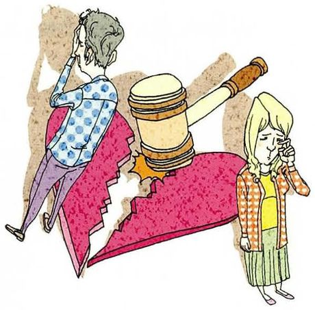
Why are divorce rates climbing?
What you seeA man and a woman sitting at opposite ends of a pink sofa, facing away from each other, with an enormous wooden gavel resting between them.
What it means为什么离婚率在上升。和第 13 题（为什么结婚）是一对，可以呼应上一题的框架。
Say it like this①Partly because it's now possible to leave. ②Two reasons: women can support themselves now, and the law makes leaving less ruinous than it was. That's not a decline in marriage, it's a decline in being trapped. ③I'd gently question the framing. A rising divorce rate in a place where divorce was recently impossible isn't a sign that marriages got worse — it's a sign that leaving became an option. In countries where the rate has been high for decades, it's actually fallen. So what looks like a worldwide trend is mostly one historical transition happening at different times. The more interesting question is why people still marry at all when leaving is easy, and the answer to that is the same as it was a hundred years ago.
19
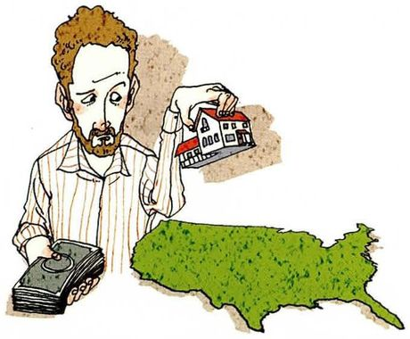
Why do you live where you do?
What you seeA man holding a small model house in one hand above a green map, a calculator on the table in front of him. Choosing a place like it's a calculation.
What it means这题问你自己，和第 1 题一样。注意 where you do 是代替 where you live，避免重复。
Say it like this①Because my university is here, mostly. ②Two reasons: the degree, and the fact that my field's work is all concentrated in a handful of cities. This one happens to be the closest. ③I'd say I didn't choose it, I ended up here — and that's true for most people my age. I came for a degree, and the degree takes five years, so five years of my life got decided by one application. What's changed is that I've started to think about staying for reasons that are mine rather than the programme's, which is a different kind of decision. I'm not there yet.
20
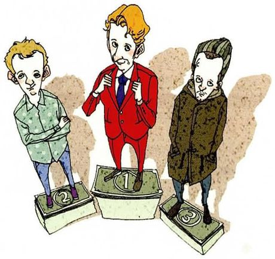
Why are some people more successful than others?
What you seeThree men standing on boxes of different heights — the one in a red suit is on the tallest, the one on the left on the lowest. The starting positions aren't equal.
What it means为什么有些人比另一些人更成功。这是全课最难的一题，也最容易答成鸡汤。
Say it like this①Luck and effort, in some proportion nobody agrees on. ②Two things, and they interact: what you're given at the start, and what you do with it. The first matters more than successful people like to admit. ③The picture gets it right — the boxes are different heights. I'd say success needs three things: some ability, a lot of persistence, and being in the right place when something opens. Only the middle one is fully under your control, which is why the advice "just work harder" is both true and a bit dishonest. What I'd add is that the third one is usually invisible in retrospect: people remember the work and forget the phone call that happened to come at the right time.
05重点词汇（美式音标）
课首页脚注给了 6 个词，其中三个（hooked on、juvenile delinquency、on the rise）是社会话题里的高频词。
A · 课本脚注的 6 个词
词
音标
课上怎么用
中文
common
/ˈkɑːmən/
still common in some places / fairly common 普遍的。反义 rare
常见的
gold-digger
/ˈɡoʊld ˌdɪɡər/
marry for money 指为钱而结婚的人。带贬义，慎用
拜金者
hooked on
/hʊkt ɑːn/
be hooked on sth 对……上瘾、着迷。比 addicted to 口语
沉迷于
juvenile delinquency
/ˈdʒuːvənl dɪˈlɪŋkwənsi/
a rise in juvenile delinquency 青少年犯罪。学术/新闻用词
青少年犯罪
on the rise
/ɑːn ðə raɪz/
Divorce rates are on the rise. 在上升。本课最高频短语
在上升
emigrate
/ˈemɪɡreɪt/
emigrate to Canada 移出。immigrate 是移入，方向相反
移居国外
B · 解释社会现象的动词
词
音标
课上怎么用
中文
tend to
/tend tuː/
People tend to… 倾向于。把话说得一般化又不说死
倾向于
drive
/draɪv/
That's driven by advertising. 驱动。名词 driver 也常用
驱动
contribute to
/kənˈtrɪbjuːt tuː/
Cost contributes to it. 促成。比 cause 温和，承认多因
促成
stem from
/stem frəm/
That stems from a shortage of time. 源于。比 because of 书面
源于
come down to
/kʌm daʊn tuː/
It comes down to money. 归根结底是。收尾很有力
归结为
underlying
/ˌʌndərˈlaɪɪŋ/
the underlying reason 根本的（原因）。和表面原因相对
根本的
premise
/ˈpremɪs/
I'd question the premise. 前提。质疑题目本身时用，非常高级
前提
trade-off
/ˈtreɪd ɔːf/
It's a trade, not a mistake. 权衡。第 17 题的核心词
权衡取舍
C · 说趋势和变化的词
表达
音标
用法
中文
climb
/klaɪm/
Divorce rates are climbing. 上升（比 rise 更形象）
攀升
in decline
/ɪn dɪˈklaɪn/
Marriage is in decline. 在衰退
在下降
more and more
/mɔːr ən mɔːr/
more and more people 越来越多
越来越多
compared with
/kəmˈperd wɪð/
compared with twenty years ago 与……相比
与……相比
steady
/ˈstedi/
a steady rise 稳定的（变化）
平稳的
peak
/piːk/
It peaked in 2010. 达到顶点
顶峰
06老师大概率会问的问题
这一课的社会题很适合被追问「那你怎么看」。老师通常会在你解释完原因之后，让你表态 —— 那是 Part IV 的预演。
Why do you think people marry?
I'll use the textbook's structure, because I think it's right. At the bottom there's the obvious thing — people don't want to be alone. Then there are the practical reasons: money, family pressure, children, papers. And at the top, for most people, it's still that they're in love and want to keep being in the same room. What's changed in my generation is the order. My parents' friends married for the practical reasons first and hoped the rest would follow. I think we'd rather have the last one and skip the rest.
Do you think these questions have definite answers?
No, and I've noticed I've been answering them as if they do. When you asked why divorce rates are climbing, I gave you two causes in about fifteen seconds. That's more confidence than the evidence deserves — the honest position is that nobody knows precisely, and the people who study it argue about it. So my answers are really plausible guesses with a structure around them.
Which of these questions was the hardest to answer honestly?
The one about people doing things they know are bad for them. I answered it in a clever way — separating short-term reward from deliberate trade-offs — and I noticed I did that partly to avoid saying the simple thing, which is that I do this constantly and I don't fully understand why. The clever version is true and it's also a way of standing slightly outside the question.
这是整个 Part II 里最值得学的一种回答：意识到自己刚刚用聪明的方式回避了什么。这种回头看的诚实，比任何语言技巧都珍贵。
Is there a question here you think is unfair?
Two of them, mildly. "Why is juvenile delinquency on the rise" assumes it is, and in most countries it isn't. And "why do some people want to be childless" puts the wanting on one side only — nobody asks why people want children, as if that needed no explanation. Both are the kind of question that contains its answer, and I'd rather say so than pretend otherwise.
a question that contains its answer（自带答案的问题）是很精辟的说法。指出题目的偏向，同时保持礼貌（mildly），分寸刚好。
Would you answer any of these differently in Chinese?
The ones about government and religion, definitely. In Chinese I'd be more careful and probably vaguer — I'd talk about how people feel rather than what I think is true. In English I found myself making a structural argument, which I wouldn't do at home. I'm not sure whether that's freedom or just the fact that the question arrived in a foreign language where the stakes feel lower.
最后那句自我怀疑（freedom or just lower stakes）是真实且深刻的。这类回答在这个话题上尤其得体，因为它既不冒犯也说明了差异。
If you could ask me one of these, which would it be?
Number 17 — why people do things they know are bad for them. Not as a theoretical question. I'd want to know whether you've ever done something like that and understood it at the time, because I suspect everyone has, and the answers would be more interesting than the sociology.
这一课的错误集中在两处：一是「因为……」的表达方式（because / because of / why 的混用），二是社会类话题里的绝对化措辞。
✗Because of the price is high, people don't buy it. ✓Because the price is high, people don't buy it. / Because of the high price, people don't buy it.
because 后面接完整句子，because of 后面只接名词。混用是这一课最高频的错误。
✗Why you think people marry? ✓Why do you think people marry?
Why 后面也要助动词 do。这和第 7 课的 What 语序是同一个问题。
✗All of people want to make more money. ✓All people want to make more money. / Everyone wants to make more money.
all 后面直接接复数名词，不加 of。加 of 时必须是 all of the people 或 all of us。
✗People is getting fatter and fatter. ✓People are getting fatter. / People are getting fatter and fatter.
people 作「人们」时是复数，动词用 are。这是本课第 2 题的题干句式，最容易说错。
✗Every people want children. ✓Everyone wants children. / Everybody wants children.
every 后面接单数名词（every person），不能说 every people。
✗Because television is easily, so people watch it. ✓Watching TV is easier, so that's what people do.
easily 是副词，形容「容易」要用形容词 easy / easier。而且中文「因为……所以……」在英语里只能留一个，不能 because…so… 同时用。
✗Divorce rates are more and more high. ✓Divorce rates are climbing. / Divorce rates are higher than ever.
more and more 只能接原级（more and more people / more and more expensive），不能接 high 这种要用比较级的词。
✗People all want money because they are greedy. ✓Up to a point it's about security. Past that, it does become about status.
「因为人都贪心」是绝对化的道德判断，英语讨论里会显得轻率。改成「到某个程度是安全感，过了那个程度才变成地位」——同样的意思，但有了层次和分寸。
08五十分钟怎么用
这一课的 18 道社会题其实共用一套打法。准备三个「自己的观察」，就能覆盖大部分题目。
课前 10 分钟：先记住第 02 节 B 的六个因果句式尤其 It's partly because…, partly because… 和 Though that doesn't explain why…。这两句能立刻把答案从一句话变成一段话。